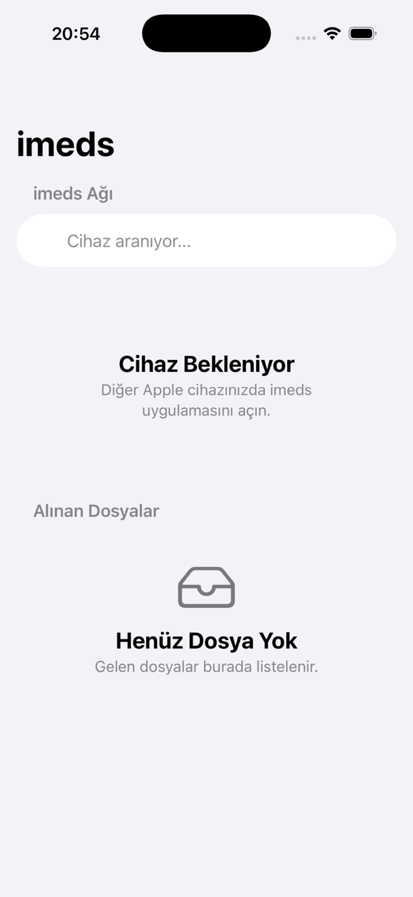
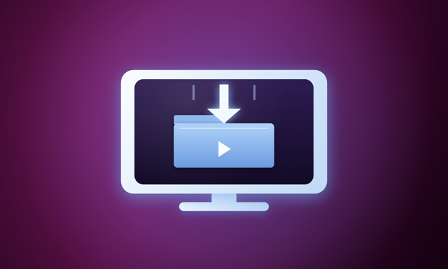
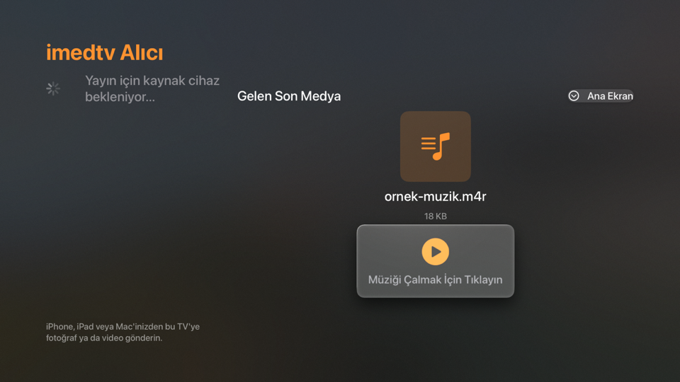
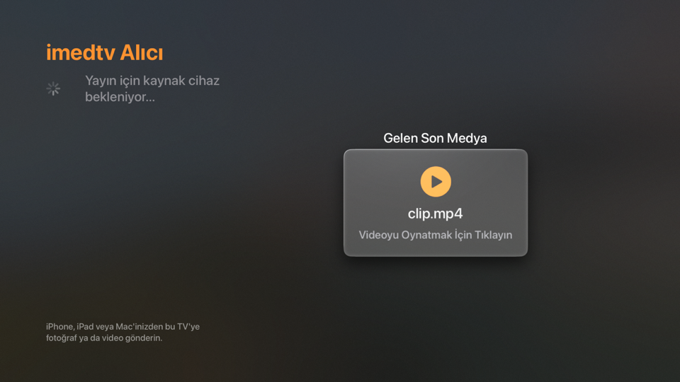
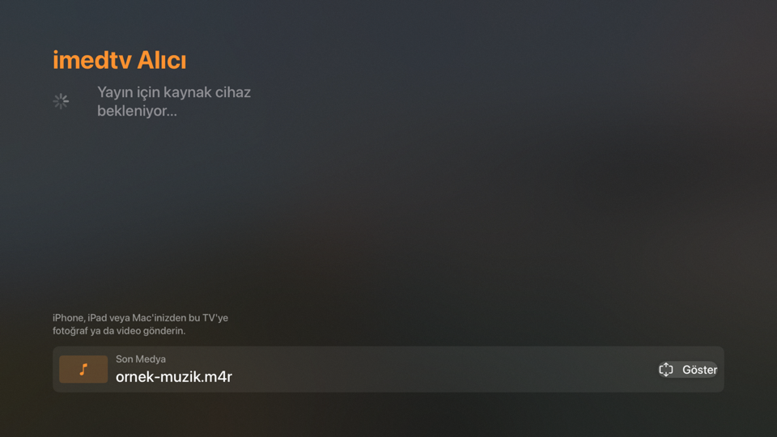

İnternetsiz Aktarım
Aynı Wi-Fi ağı veya yakın Bluetooth yeterli; internet bağlantısı gerekmez.
Yerel ağ · İnternetsiz
Fotoğraf, video, müzik ve dosyaları aynı Wi-Fi ağındaki Apple TV'ye doğrudan gönderin. Sunucu, bulut veya hesap yok; aktarım şifreli bir cihazdan cihaza oturumda gerçekleşir.
iOS 17+ · tvOS 17+ · iPhone, iPad ve Apple TV

Özellikler
İki uygulama, tek yerel ağ; arada bulut yok.
Aynı Wi-Fi ağı veya yakın Bluetooth yeterli; internet bağlantısı gerekmez.
Aktarım, encryptionPreference: .required ile kurulan bir MCSession üzerinden yapılır.
Sistem fotoğraf/video seçicisi veya Files uygulamasından her tür dosyayı gönderin.
Yüzde, aktarılan/toplam boyut ve anlık MB/sn; aktarım iki taraftan da iptal edilebilir.
Alınan dosyalar Documents/Received altında kalır, Files'ta görünür; fotoğraf ve videolar isteğe bağlı galeriye eklenir.
Görsel, video ve ses için ayrı arayüzler; Geri tuşu uygulamadan çıkarmaz, son medya altta kalır.
İki uygulama
Telefona imeds'i, Apple TV'ye imedtv'yi kurun.
iOS 17+ · iPhone ve iPad
Gönderici arayüzü: cihazları bulur, dosya seçer ve canlı ilerlemeyle gönderir.

tvOS 17+ · Apple TV
Alıcı ve oynatıcı: gelen dosyayı arşivler, görsel/video/ses olarak oynatır.
Ekranlar
Telefonda seçin, televizyonda izleyin.



Nasıl çalışır
İki cihazı aynı Wi-Fi ağına alın ve ilk açılışta Yerel Ağ iznini verin.
Uygulamalar aynı anda yayın yapar ve tarar; şifreli oturum kendiliğinden kurulur.
İlerleme yüzdesini ve hızı izleyin. İş bitince Apple TV ana ekranda kalır, son medya altta durur.
Gizlilik
Aktarım doğrudan iki cihaz arasında gerçekleşir; hiçbir veri dışarıya gönderilmez.
S.S.S.
Hayır. Cihazların aynı Wi-Fi ağında olması veya Bluetooth menzilinde bulunması yeterli.
iOS 17+ iPhone ve iPad (imeds) ile tvOS 17+ Apple TV (imedtv).
Sistem seçicisinden fotoğraf ve video, Files'tan her tür dosya. Apple TV görsel, video ve ses dosyalarını oynatır; diğerlerini simge ve adıyla gösterir.
Oynatma dosyanın codec desteğine bağlıdır. .avi ve .mkv tanınsa bile DivX/Xvid gibi codec'ler AVFoundation tarafından çalınamaz; uygulama nedeni ekranda yazar.
Documents/Received altında saklanır ve Files uygulamasından erişilebilir. Fotoğraf ve videoları isterseniz galeriye de ekleyebilirsiniz.
Hayır. Proje açık kaynak ve geliştirme aşamasında; App Store sürümü henüz yayınlanmadı.
Xcode 16 ile imeds ve imedtv hedeflerini derleyin.
Proje geliştirme aşamasındadır; App Store sürümü henüz yayınlanmadı.